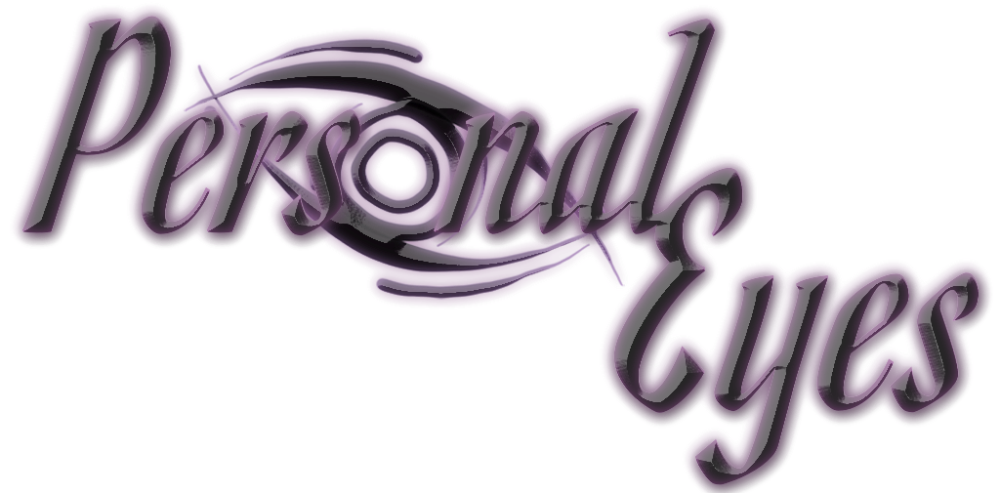

Projects

A professional project devloped by Xana Adhoc and helmed by Elouise Oyzon from RIT, I worked on it from May to August 2021
Changeling is a VR mystery, first-person 3D platformer game built upon the idea of magical realism and a sense of unease and wonder. You play as Aurelia, a dream-walker whose gift is the ability to see through the eyes of anyone she touches. You are tasked with helping this family figure out what is wrong with their child, and as you contact each member, you see through the lens of their hopes and fears of what the child is.
My Role: 3D Enviroment Artist and Character Modeler/Animator
ChangelingVR Website | Trailer
A small indie project that was accepted into RITs Magic Makers program. The team and I have worked on the game since July 2021
Personal Eyes is a survival horror game inspired by the PS2 era of video games! Switch between first- and third-person perspectives to navigate and survive an unexplainable superstructure known only as the Factory.
My Role: Character Modeler, 3d Envroment Artist
Demo on Itch.ioA personal project that I and three others have been working on since January 2022
Use your grappling hook to traverse a multitude of environments and obstacles. Find your own way through open-ended levels and get to the finish as fast as you can!
- Physics-based gameplay based around your grappling hook
- Use all the tools at your disposal - the grapple, the dash, and the level itself
- Play to beat best times, airtimes, and grapples used each level